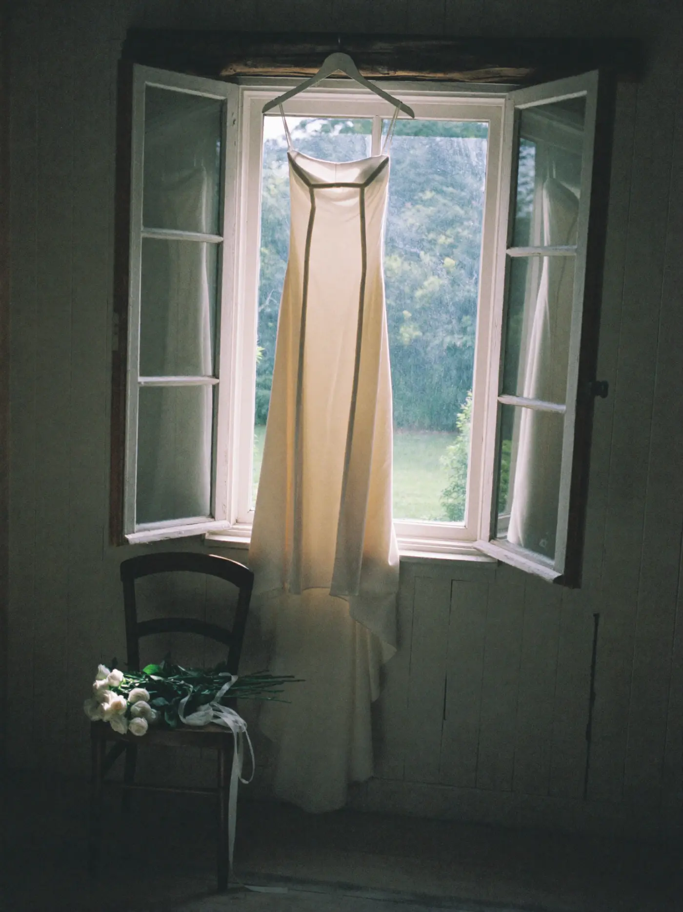
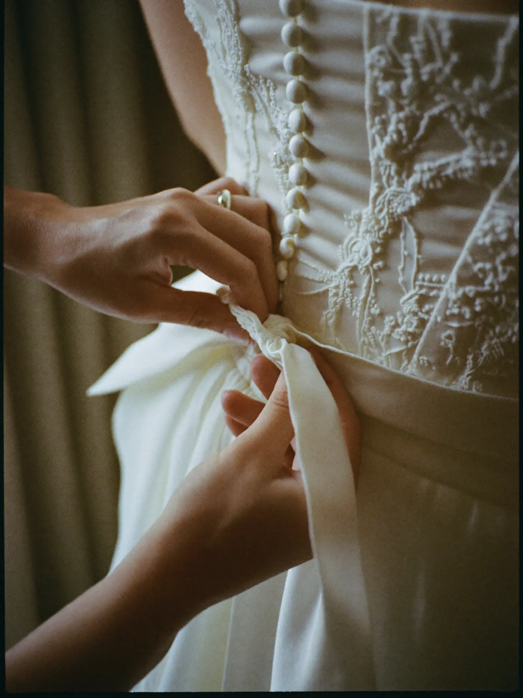
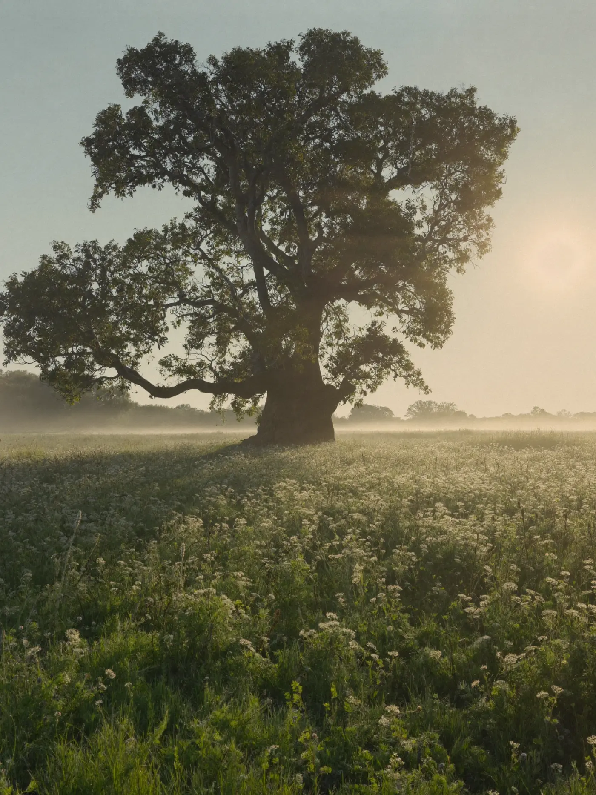
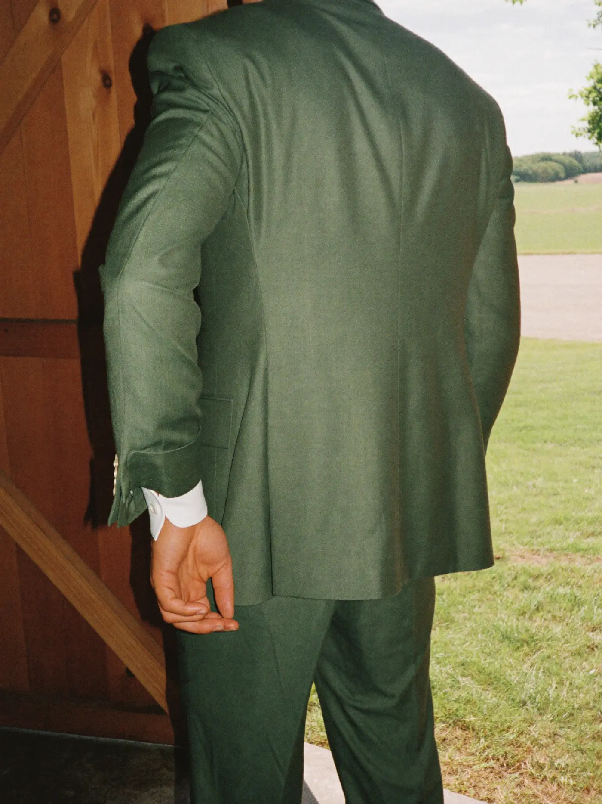
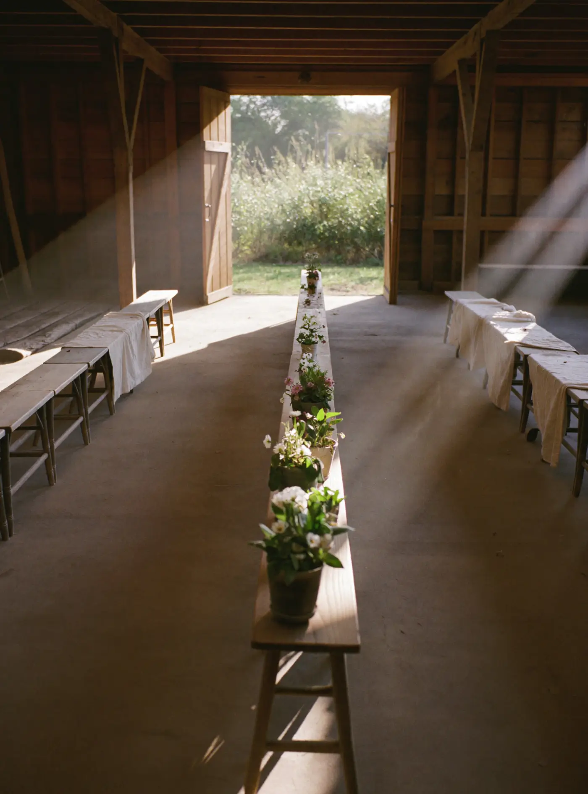
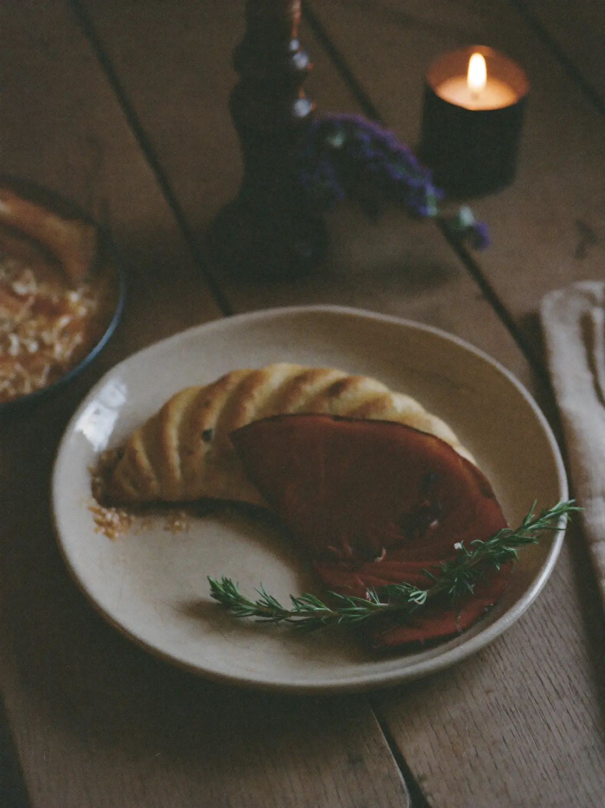
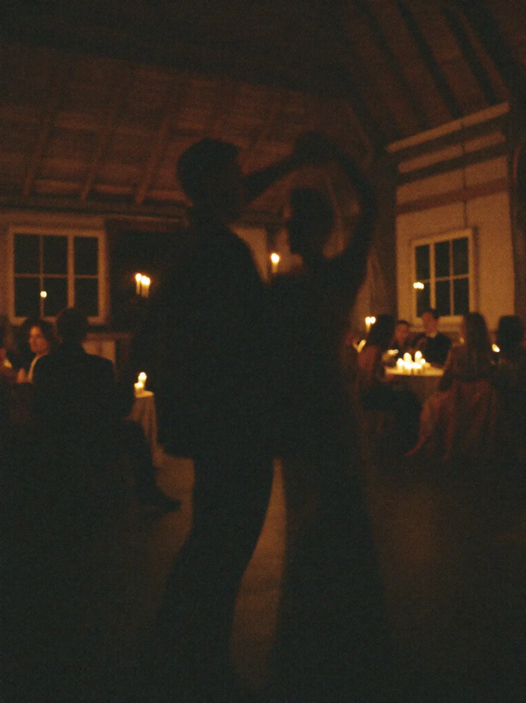
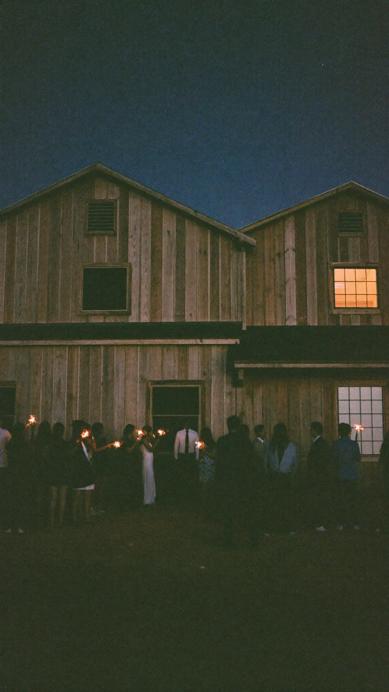

07:40 / Morning
The dress hangs in the window
The bridal cottage wakes before anyone else. Windows open onto the meadow, coffee on the sill, and the gown waits in the soft light with roses on the chair.



Plate I / An oak barn in the meadow
One barn, one meadow, one wedding a day. Yours from the first light to the last candle.
Scroll the day
A letter from the barn
The doors are older than anyone can remember. The oak outside is older still. We open them for one couple at a time, and then we step back and let the day be yours.
07:40 / Morning
The bridal cottage wakes before anyone else. Windows open onto the meadow, coffee on the sill, and the gown waits in the soft light with roses on the chair.



11:30 / The meadow
Guests arrive along the mown path, under the oak, with the barn doors still closed. Nobody else is booked in today, so there is nowhere else they need to be.

14:00 / Ceremony
Old benches, a posy on every one, and the afternoon pouring down the aisle from the meadow side. You walk in with the light behind you.



19:00 / Supper
Candles the length of the barn, supper cooked in the yard kitchen, and a table long enough that nobody is seated at the edges.


21:40 / First dance
The tables slide back, the band starts low, and the barn holds its breath for the two of you.
23:30 / The last candle
Sparklers by the doors, stars over the meadow, and a late night with no neighbours to keep quiet for.

The barn, plainly

Come and see it
Viewings run on weekday evenings and Sunday mornings, when the barn is quiet. Tell us a little and we will write back personally within a day.
Or call us on 01632 960418